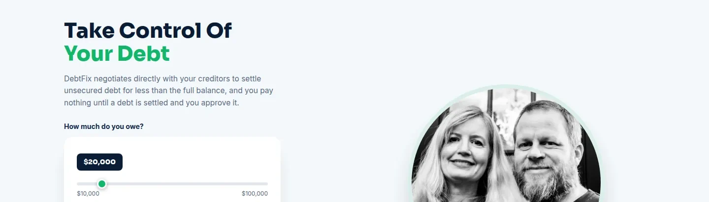
Websites, WordPress themes and client portals.
Designed and built by one person, from the Philippines.
Selected work
12 projects01
DebtFix
Live client site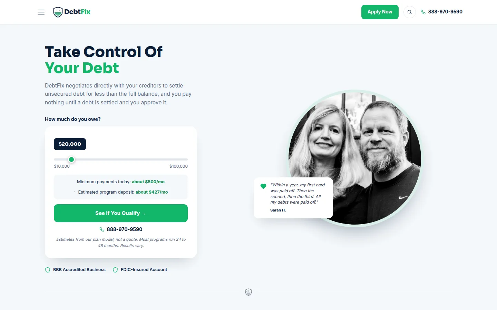
A fast, clean site built around one moment: pick how much you owe, then compare your minimum payments with one monthly program deposit. I built its cost-of-debt calculator too. DebtFix chose this design over many others, including 99designs entries.
02
WisestWallet
Live client site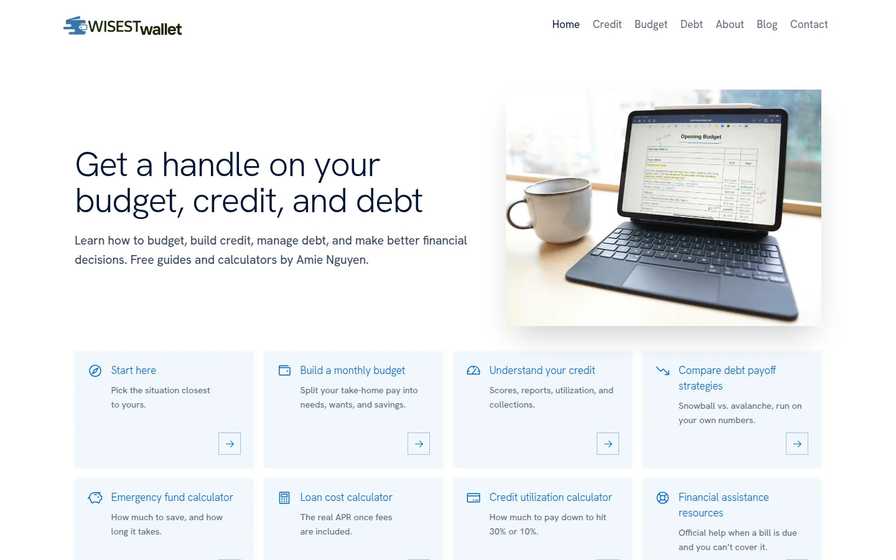
A personal finance blog that loaded slowly and needed an advertiser’s approval. I built a custom WordPress theme, four calculators and topic hubs, then rewrote older posts with sources.
03
Resource Help Network
Live client site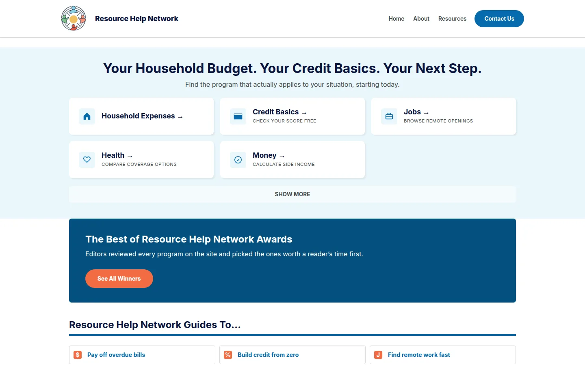
Step-by-step guides on bills, credit, jobs and health coverage, grouped by topic and built as a WordPress theme.
04
DebtFix client portal
Client product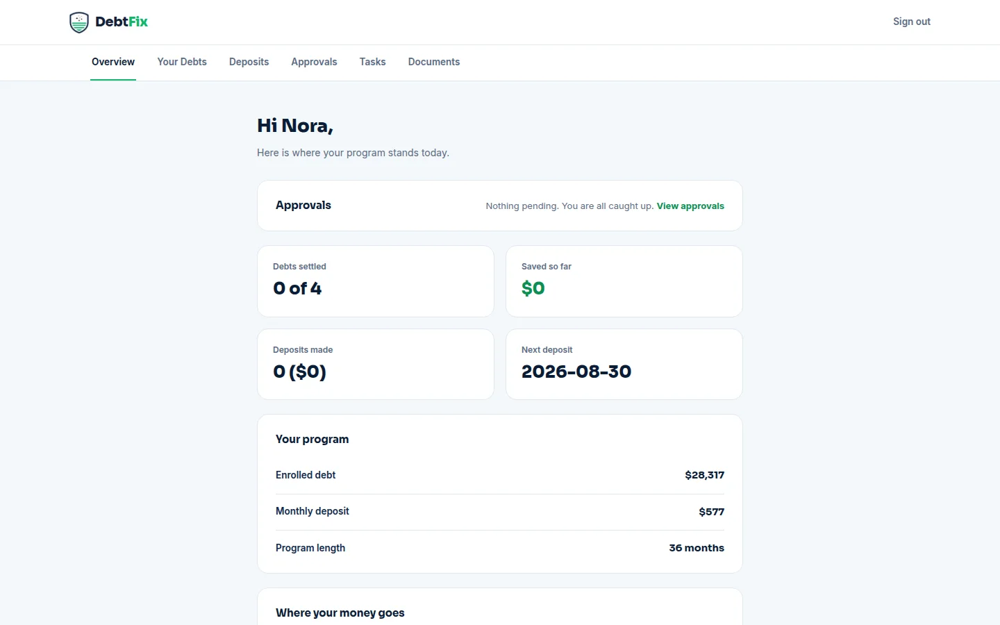
The signed-in side of DebtFix: program progress, deposits, documents, tasks, and settlement approvals a member signs off on. Six screens, written in plain language and honest about what the numbers are estimates.
05
IdentityProtect
Client homepage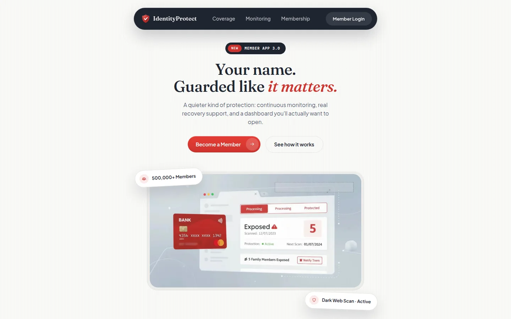
A homepage for an identity-protection product, rebuilt to a reference the client shared. It carries five colour themes from one file, so the same page can be shown in each before a direction is picked.
06
Docs-only chatbot
Own project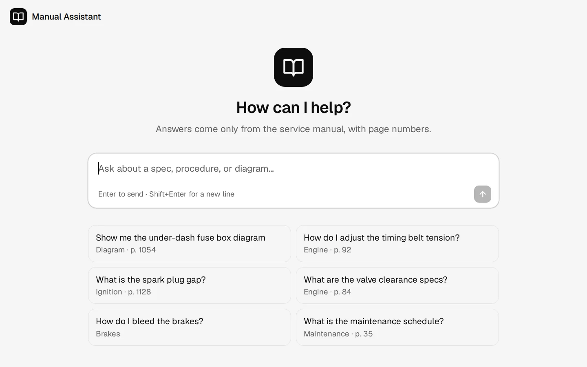
A support assistant that answers your customers’ and staff’s questions from your own PDF, names the page, and won’t make things up. Tested on a 1,379-page scanned manual.
07
Corner Cup Bot
Own project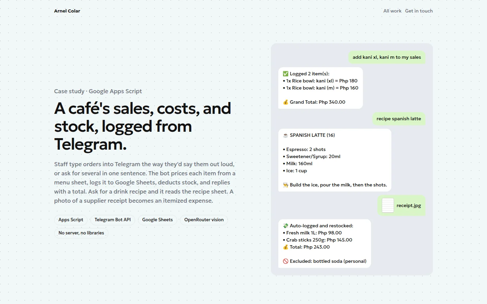
A Telegram bot I built for our own small café. It logs orders, expenses and stock to Google Sheets, and reads supplier receipts with a vision model.
08
Pawgoods
Own project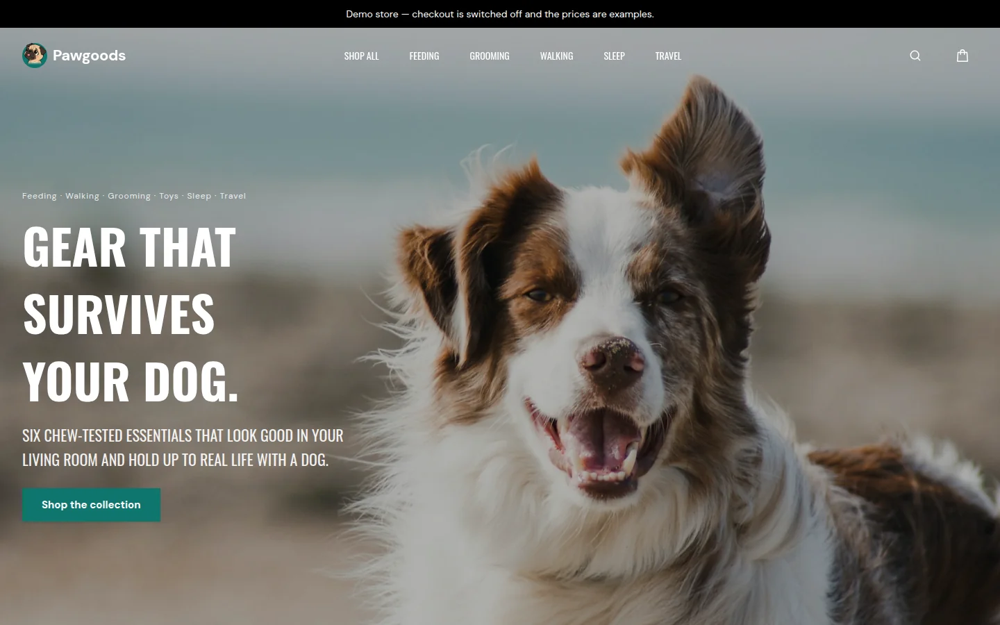
A pet-accessories storefront with no build step: every brand string in one config file, a local-storage cart, and Stripe Payment Links for checkout. A margin script reads the catalogue and exits non-zero if a product can’t sell at its price.
09
Halcyon H16
Template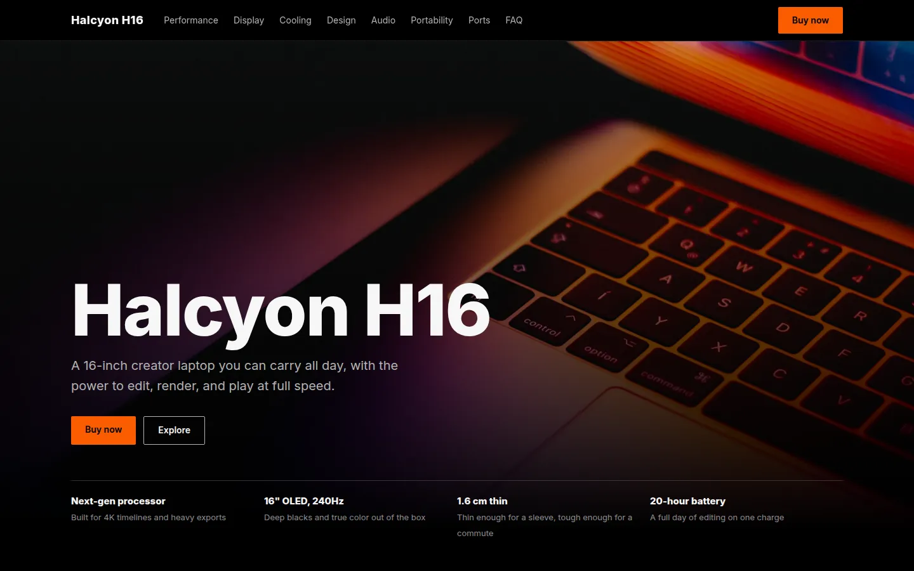
A launch page for a 16-inch laptop: sticky section navigation with scrollspy, a pinned display story, and swipeable feature cards.
10
Wardline
Template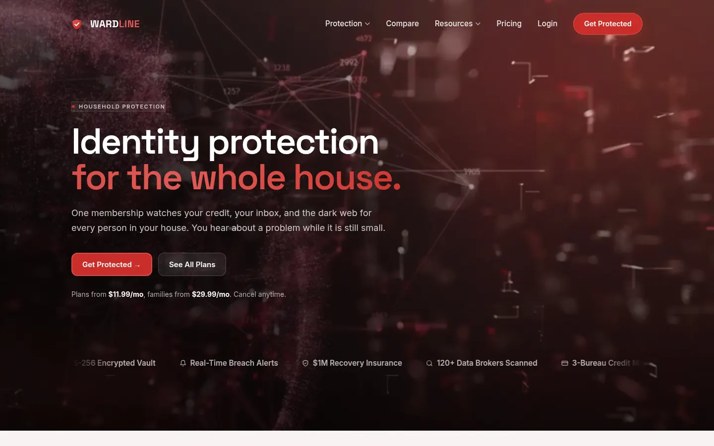
A dark page for a household protection plan: an animated network hero, an eight-layer feature explorer, pricing tiers, and a three-step setup flow.
11
Vaultledger
Template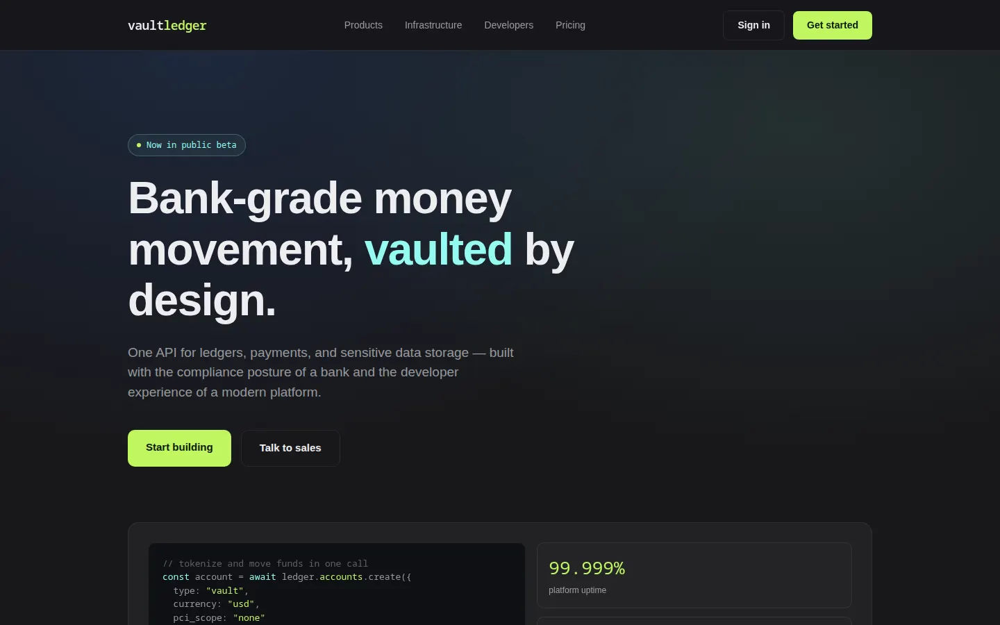
A page for developers evaluating a ledger and tokenisation API: code samples sit beside uptime stats, and a vault panel shows card numbers swapped for tokens.
12
NOOK
Template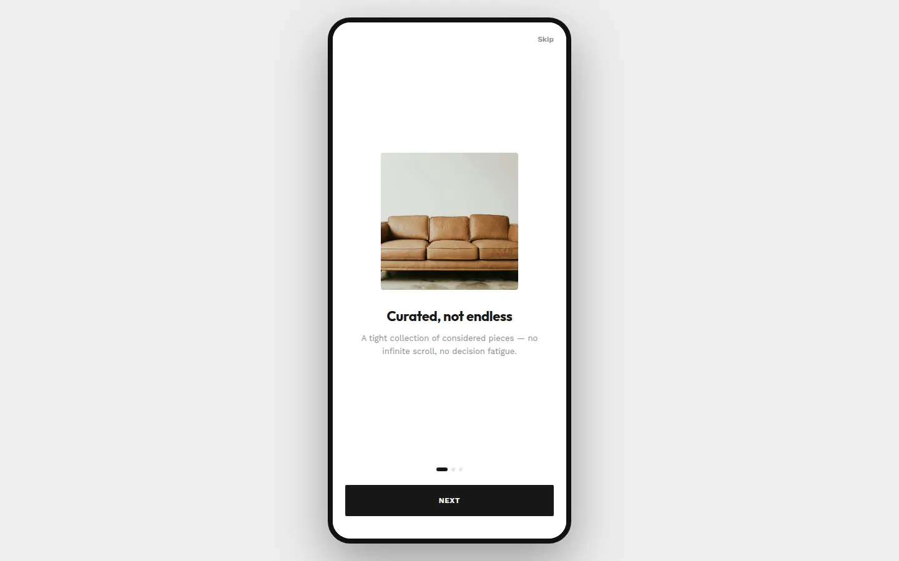
A furniture shopping app. The case study covers the problem, user flow, wireframes and a design system, and the prototype runs in your browser.
What I do
Four kinds of work, and the pages that prove each one.
Tools: HTML, CSS, JavaScript, PHP, WordPress, Next.js, React, Apps Script, Telegram Bot API, Python, FastAPI, LangChain, NVIDIA, Docker, Git and GitHub.
-
Financial calculators
Debt cost, payoff dates, emergency fund targets and credit utilisation, written in plain JavaScript.
-
WordPress themes and Next.js
Themes made for one site each, with topic pages, guide and blog templates, and calculators built in. On my own time I moved a WordPress site over to Next.js and React.
-
Hand-coded front end
HTML, CSS and JavaScript with no framework. Halcyon has scrollspy navigation, a pinned scroll story and swipeable cards.
-
Document assistants and automation
A chat assistant that answers only from a client’s own PDF, plus Apps Script jobs that turn a Telegram message into a Google Sheets row.
How we work together
3 steps- 01
Sketch
I sketch the layout and pick the type and colours for your page.
- 02
Review
You look it over, ask for changes, and approve it.
- 03
Build and launch
I write the HTML and CSS myself. The page you approve is the page that goes live.
Design and code, from one person.
I keep my designs minimal, with plenty of white space and one strong colour per page.
Most of my client work is in personal finance and debt relief. Those readers are careful with money, so I keep pricing plain and disclaimers honest.
Based in the Philippines. Available 9 AM to 5 PM Philippine time (UTC+8).